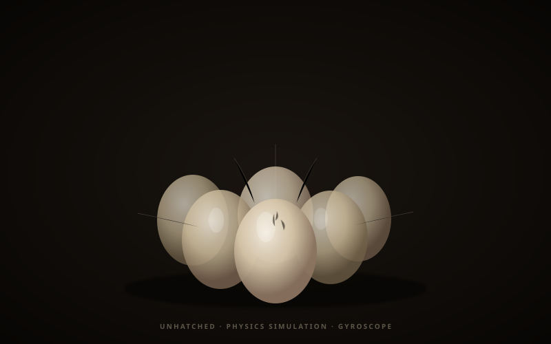

Physics Simulation · 2025
Unhatched:
Interactive Spider Egg System
A physics-based simulation of spider eggs in a canvas environment. Eggs cluster, drift, collide softly, and respond to gravity — tilting with device gyroscope on mobile so the mass shifts as you hold the screen. An exploration of soft-body feel without a physics engine.
Concept
The piece started from a single question: what does a mass of organic objects feel like when it responds to you? Eggs were the right form — ovoid, translucent, fragile, with an implied interior life. The simulation doesn't try to be scientific; it tries to feel right.
On desktop, the mouse acts as a slow gravitational attractor — eggs drift toward the cursor, cluster, then redistribute. On mobile, the DeviceOrientation API reads gyroscope tilt and applies it as a directional gravity vector, so the pile slides and re-packs as you rotate the device.
Simulation Detail
Each egg is an ellipsoid particle with position, velocity, and a small rotation state. Collision resolution uses a simplified overlap-repulsion model: when two eggs intersect by their combined radii, they push apart along the collision normal with a damped impulse. No rigid body solver — just iterative separation passes per frame, which produces the soft, slow-settling feel.
The silk thread anchors visible in the render are cosmetic: drawn as Bézier curves between egg clusters to reinforce the sense of an organic, suspended mass. They don't participate in the physics — they just make the scene feel inhabited.